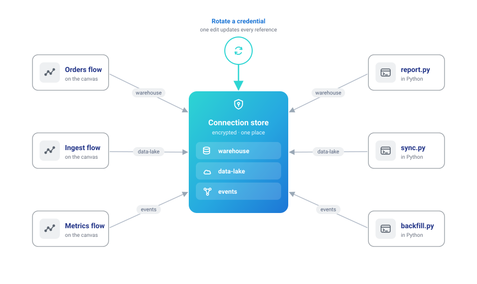
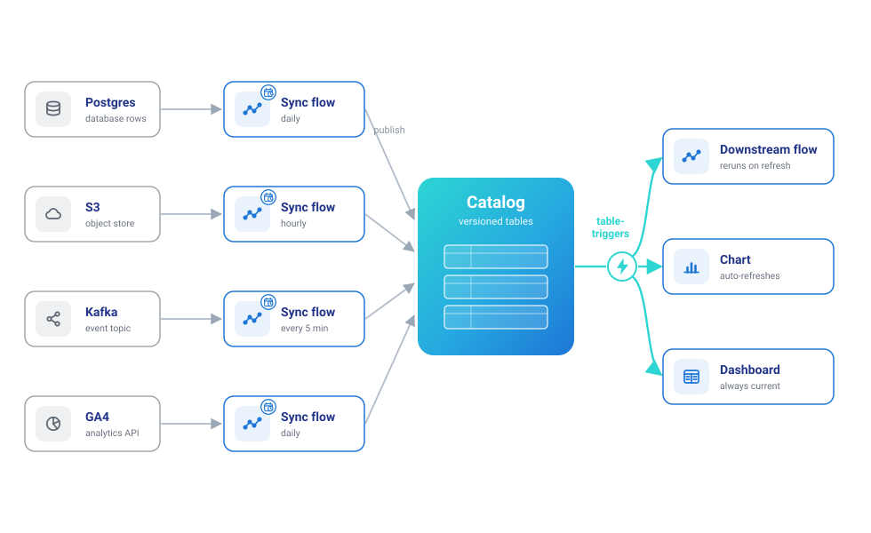

Your data lives somewhere else
Most data doesn't start as a local file. It's rows in Postgres or MySQL, Parquet in S3 or a data lake, events accumulating on a Kafka topic, marketing numbers behind the GA4 API, records in some SaaS tool with a REST endpoint. This route covers working with all of it where it is, instead of moving copies around by hand.
None of this route requires code: every source below is a node in the visual editor, and connections are configured in the UI. The Python calls are the equivalent for those who prefer a script — an option, not a prerequisite.
1. Connect once, reference everywhere
Credentials and pipelines are separate things. A connection — host, credentials, region, auth method — is saved once under a name, encrypted at rest. Flows then reference the name. That split is what makes everything downstream safe and repeatable: a flow file never contains a secret (safe to share, safe to version), rotating a credential is one edit instead of a hunt through every pipeline, and the same name works from the canvas and from Python because both read one store.

Supported out of the box: databases (PostgreSQL, MySQL, SQLite, DuckDB, SQL Server), cloud storage (S3, Azure Data Lake, Google Cloud Storage — with auth methods from stored keys to ambient aws-cli/environment credentials), Kafka/Redpanda brokers, and Google Analytics 4 properties. Connections covers every form field.
2. Read from the source, not from copies
Each source is a drag-and-drop node on the canvas — with a matching ff.* call for code workflows:
| Your data is in… | On the canvas | In Python |
|---|---|---|
| PostgreSQL / MySQL / SQLite / DuckDB / SQL Server / Denodo | Database Reader | ff.read_database |
| S3 / ADLS / GCS (CSV, Parquet, JSON, Delta, Iceberg) | Cloud Storage Reader | ff.scan_parquet_from_cloud_storage, … |
| A Kafka / Redpanda topic | Kafka Source | ff.read_kafka |
| A REST endpoint | REST API Reader | ff.read_api |
| Google Analytics 4 | Google Analytics Reader | — |
A flow that pulls from the source has no intermediate extract to go stale. This is the database path in code, tested in CI against a real PostgreSQL:
big_budget = ff.read_database(
"analytics-postgres",
query="""
SELECT title, budget, vote_average
FROM public.movies
WHERE budget > 200000000
ORDER BY budget DESC
""",
).collect()
all_movies = ff.read_database(
"analytics-postgres", schema_name="public", table_name="movies"
).collect()
The database tutorial and cloud storage tutorial walk the same paths in the UI, form by form, and the connector matrix is the complete reference of every source and sink.
3. Transform in flight
Between reading and writing it's a normal Flowfile pipeline: join the Postgres orders against the S3 product export, standardize the columns, aggregate — visually or in code, with Polars underneath. Two behaviors matter when reading from live systems:
- Database reads can push work to the source. The Database Reader takes a query, not just a table name — filter and pre-aggregate in the warehouse when that's cheaper than pulling raw rows.
- Kafka reads are incremental by consumer group. Each run picks up where the last one stopped (offsets commit only after a successful run), so a scheduled flow consumes exactly what arrived in between — no manual bookkeeping, and Reset Offsets rewinds when you want history again.
4. Write back where it belongs
Results leave the way they came in, to whichever system consumes them: a Database Writer back into the warehouse, a Cloud Storage Writer emitting CSV/Parquet/JSON/Delta into the bucket for other tools, or Flowfile's own catalog when the result is for analysis. The full write path — connection, format, write mode, round-trip — runs in CI against a real S3-compatible store:
income_by_city = (
ff.read_csv("data/templates/supermarket_sales.csv")
.group_by("city")
.agg(ff.col("gross_income").sum().alias("total_income"))
)
income_by_city.write_parquet_to_cloud_storage(s3_path, connection_name="analytics-s3")
reloaded = ff.scan_parquet_from_cloud_storage(s3_path, connection_name="analytics-s3").collect()
A Delta table on S3 or ADLS also takes the catalog's merge modes — upsert, update or delete on key columns — and Track changes, after which a Cloud Storage Reader downstream can return only the rows committed since a version or time instead of the whole table. Change Tracking covers how that works on a bare path, which keeps no cursor.
5. Turn one-off pulls into standing syncs
The pattern that compounds: one small flow per source — read, normalize, land in the catalog — each on a schedule. Kafka topics sync into catalog tables the same way. Downstream flows trigger off the tables they consume, so a fresh sync cascades through everything built on it, and the catalog becomes the one place where scattered systems meet as queryable, versioned tables.

6. Working in a team
In the multi-user Docker deployment, connections and secrets are shareable with user groups — teammates run flows against a shared connection without ever seeing the credential. One guardrail: a colleague with manage rights who repoints a shared connection at a different host must re-enter the credentials.
Start here: the database tutorial — from connection form to a read-transform-write round trip.